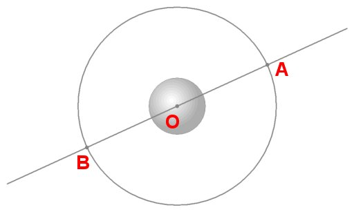
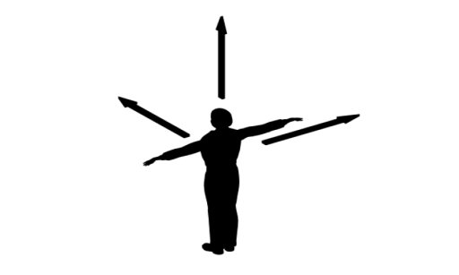
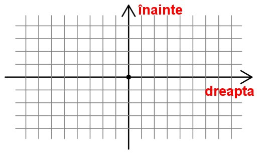

- Fig. 1
- Unde va ajunge bila după ce va parcurge 10 cm?
|

- Fig. 2
- O mulţime de locuri se află la 10 cm de locul de pornire!
|

- Fig. 3
- Bila se deplasează 10 cm în lungul liniei drepte.
|
- Fig. 4
- Sensul deplasării bilei.
|
- Fig. 5
- Săgeata care reprezintă deplasarea bilei.
|
O şi A.'); return false" >
- Fig. 6
- Vectorul deplasării centrului bilei între punctele O şi A.
|

- Fig. 7
- Orientările de referinţă cu care fiecare dintre noi descrie lumea.
|
- Fig. 8
- Două orientări de referinţă, perpendiculare.
|

- Fig. 9
- Reţea de linii paralele cu axele de referinţă.
|
- Fig. 10
- Vectorul deplasare este independent de alegerea axelor de referinţă.
|